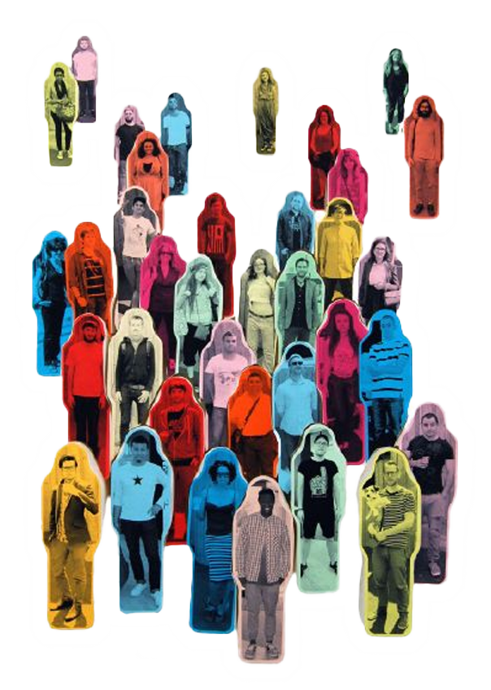
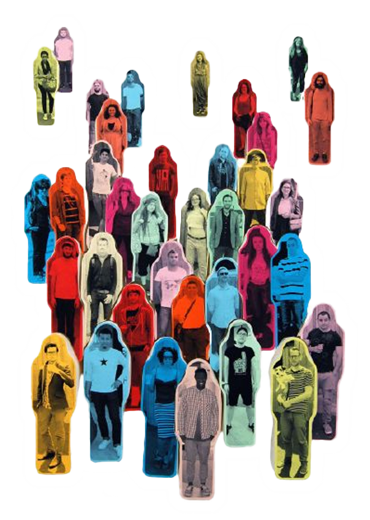
una pagina muy chula y sobretodo divulgativa.
No te aburriras con nosotros especialmente
porque te traemos lo mejorcito de tus
personajes favoritos historicos reales y no tanto.
Por lo que entra desde cualquiera de los dispositivos
que tengas disponibles y estate atento a nuestra publicación semanal
de nuevos personajes.
¡Te esperamos!
NUEVOS PERSONAJES
LOS VIERNES A LAS 18:00H
TOTAKEKE
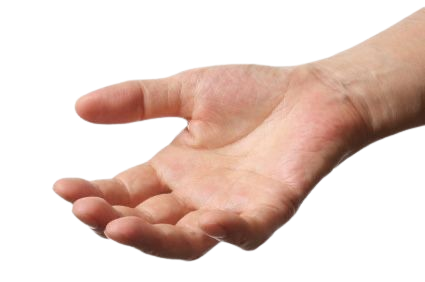 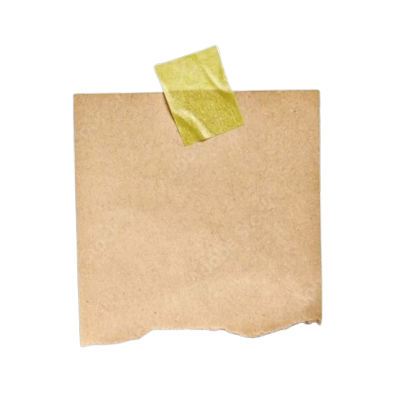 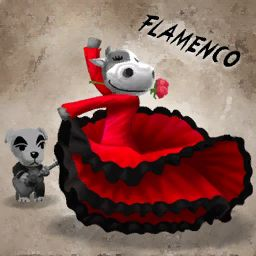 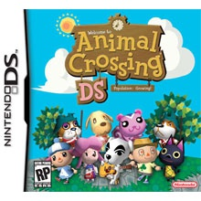Tiene mas de 100 canciones en su repertorio, su disco mas famoso es Tota-Flamenco.
Mi música quiere ser libre. Yo ya lo soy.
-Totakeke
YAYOI KUSAMA
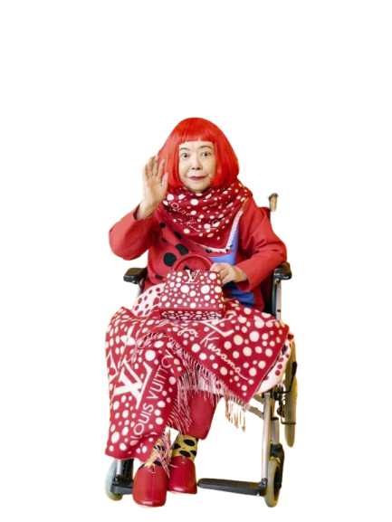 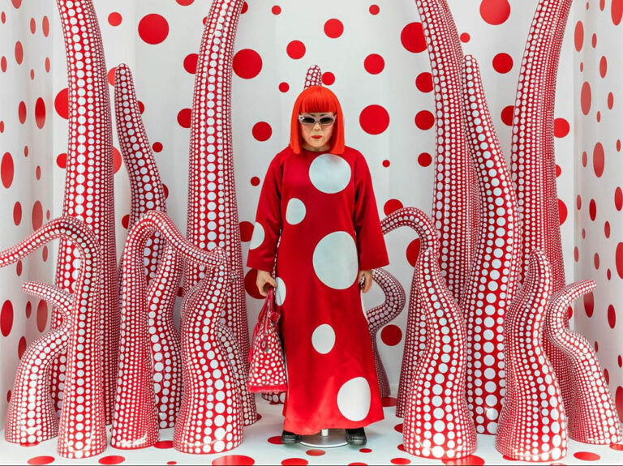
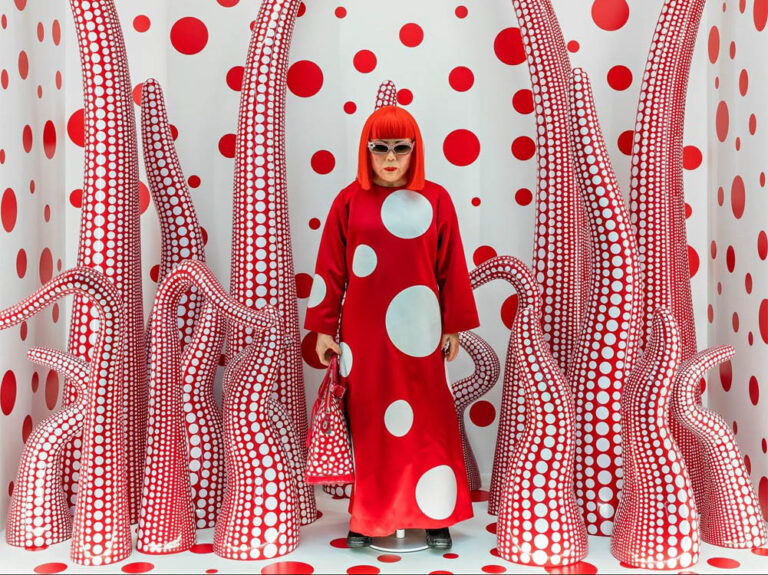
Conocida por sus obras con puntos, ha colaborado con grandes marcas.
El arte es lo que me hace vivir. Es mi salvación.
-Yayoi Kusama
LADY GAGA
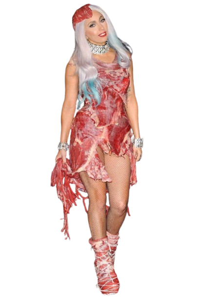 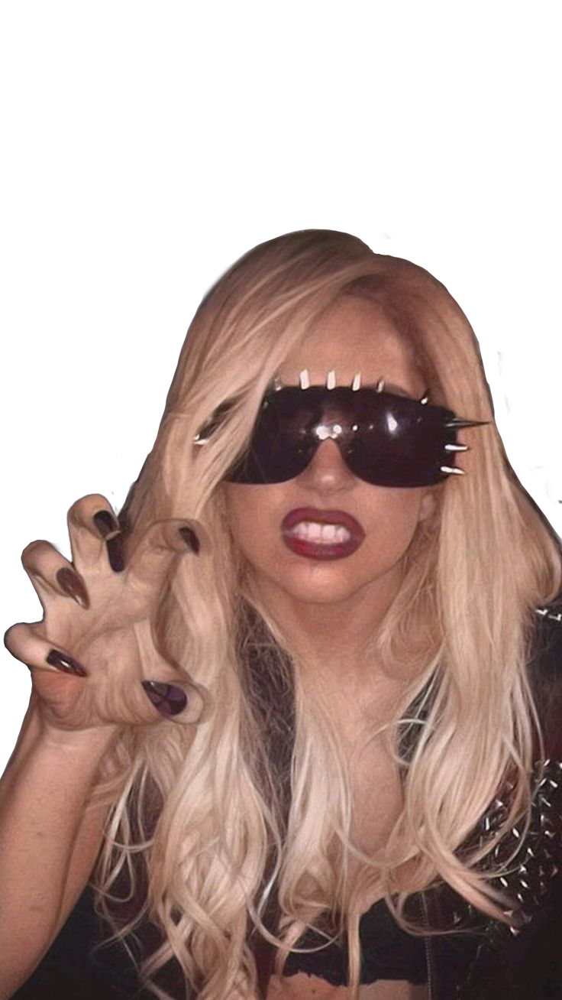 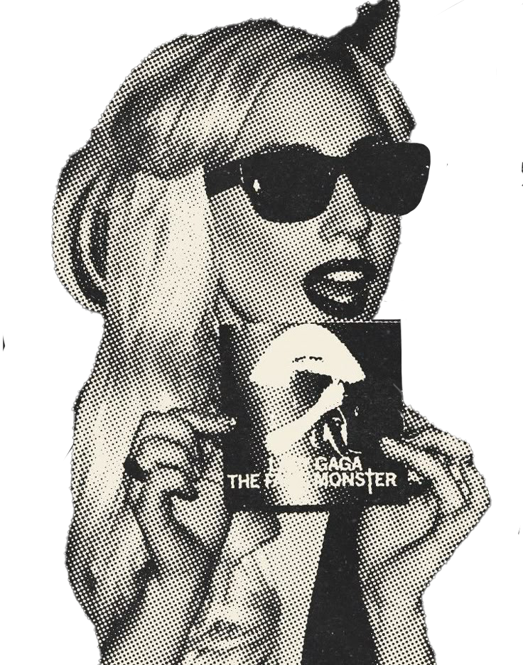Conocida por sus extravagantes atuendos y su poderosa voz.
No soy una estrella, soy una constelación.
-Lady Gaga
EDWARD CULLEN
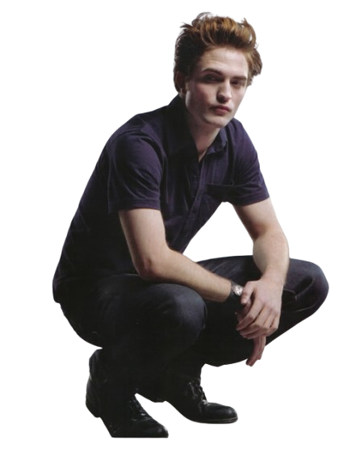 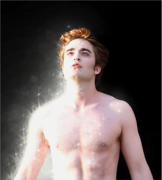Protagonista de la saga Crepúsculo.
Esta es la piel de un asesino, Bella.
-Edward Cullen
RUSOWSKY
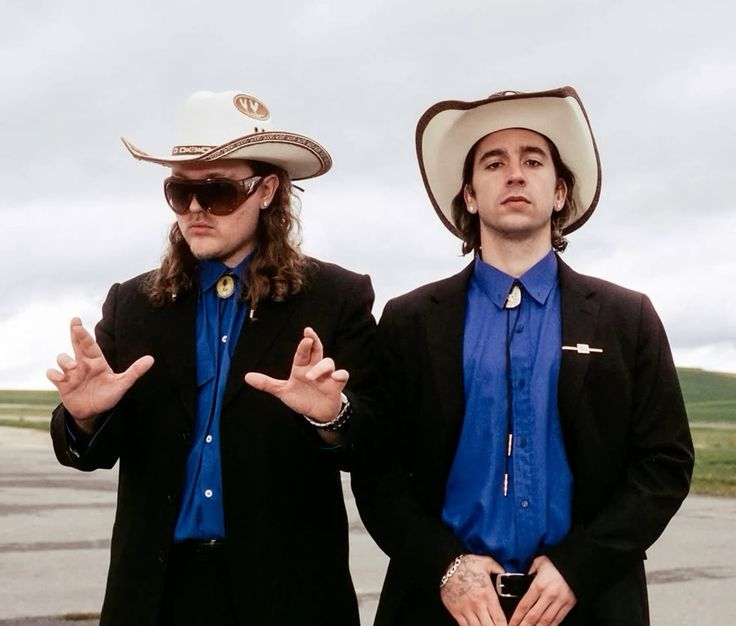Con su ultimo album "DAISY" ha conquistado nuestro corazoncito.
Conocido por su estilo único y su música pegajosa.
Y si pasa, pues que pase.
-Rusowsky
YUTYRANNUS
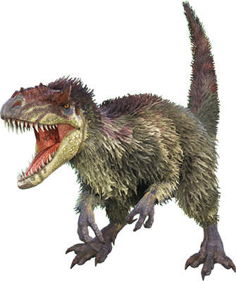 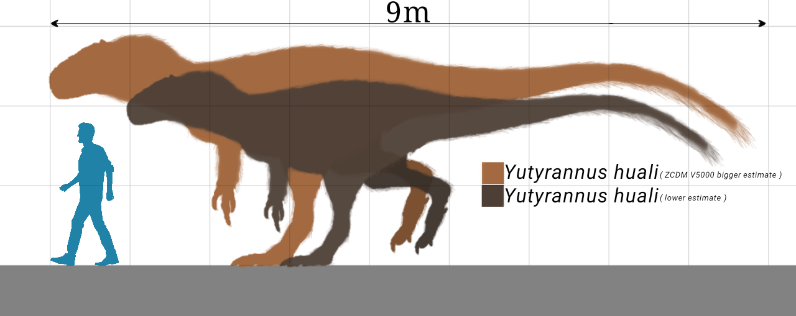 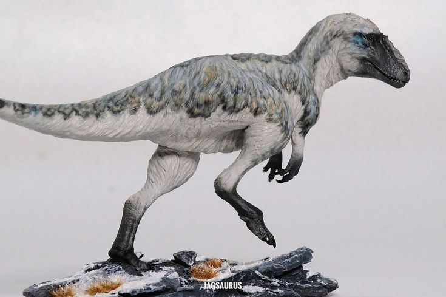Fue el primo Chino del T-Rex.
Aunque parezca un pollo gigante, era un depredador feroz.
-Yutyrannus
creadores de Malas Lenguas.
Nos encanta la historia y
compartir datos curiosos
sobre personajes famosos.
Esperamos que disfrutes
de nuestra
web tanto como nosotros
disfrutamos creándola.
¡Gracias por visitarnos!